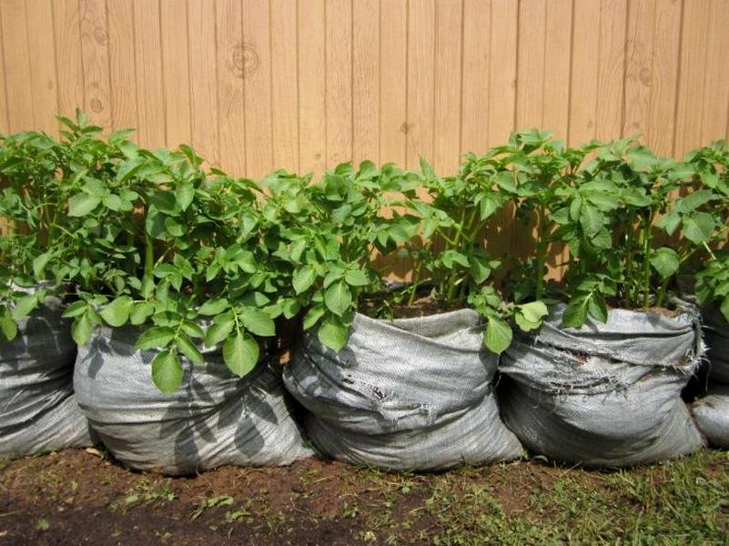

Как правильно копать картошку?
 Вход Быстрая регистрация Если вы у нас впервые: О проекте FAQ ГЛАВНАЯ ВОПРОСЫ ТЭГИ СООБЩЕСТВО НАГРАДЫ ЗАДАТЬ ВОПРОС 6Как правильно копать картошку?
Katter [11.6K] 6 лет назадКак нужно копать картошку? Вилами или лопатой? Нужно ли ее сушить перед тем как складывать в мешки?
тэги: картошка категория: животные и растения ответить комментировать в избранное 6 ответов: старые выше новые выше по рейтингу 2 Алекс андр Серге ич [2.4K] 6 лет назадОграничимся рассмотрением ручного метода (сейчас есть много портативной техники на мотоблоках, мини-тракторах, и т.п.).
Копать картошку желательно в ясную погоду. Хорошо, если продувает ветерок. Если был дождь, то желательно подождать, пока земля просохнет, чтобы не было грязи, однако, не ждать, пока засохнет на твердую груду. Обычно в наших средних широтах картошку копают с середины августа по середину сентября, но можно и позже - до Покрова.
Копать картошку вилами (точнее, габлями - инструмент вроде вил с закругленными кончиками и более частыми зубьями)можно только в том случае, если картошка выращена профессионально по качеству посадки и ухода на рассыпчатой песчаной или легкой гумусовой почве без сорняков. Это вы сразу поймете при попытке копать этим инструментом на тяжелой глинистой или каменистой почве, особенно сухой, либо при наличии сорняков, особенно с длинными путающимися корнями (пырей) или стеблями (березка). Если сорняков очень много и из-за них не видно кустов картошки, то лучше скосить косой и сгрести траву, но при этом стараться, чтобы не нарушить окучку ряда, не порезать картошку косой. Тогда по оставшимся сухим стеблям можно будет легче различить кусты картошки при копке. Попутно отметим, что наличие сорняков в период сбора урожая картошки не всегда свидетельствует о плохом уходе за участком или нерадивости хозяина, а даже иногда напротив - возможно, хозяин хотел вырастить экологически чистый продукт на новом участке, засоренном семенами диких трав, и не использовал гербициды. На таких травянистых, глинистых, каменистых и т.п. участках целесообразно копать картошку стандартной (не уменьшенного размера) прямой лопатой (заступом), лучше из нержавеющей стали или титана, чтобы на гладком лезвии не было ржавчины и грязи от предыдущих работ. Ручка лопаты должна быть гладкая, по длине не выше подмышки копающего, чтобы ее легко можно было перекладывать с руки на руку. Копать лучше в сапогах или в высоких ботинках, плотно прилегающих к ним спортивных штанах. Идеальный вариант - советские солдатские кирзовые сапоги. Самый лучший метод копки - вдвоем. При этом методе один человек копает по очереди вдоль ряда куст за кустом, а помощник (помощница) выбирает за ним картошку и складывает в ведра. Можно сразу сортировать по размеру в 2 ведра. Если нужна более детальная сортировка, то лучше складывать выбранную картошку сначала в рядок параллельно копаемому ряду, можно один ряд кучек на 2-3 ряда картошки, а потом по завершении копки участка пройтись с ведрами и разложить все детально. При выборке помощник (помощница) копающего старается наклоняться, не сгибая колени и не садясь на корточки (это очень утомительно будет), а также не лезть руками сразу за лезвием лопаты, а подождать, пока копающий перейдет к следующему кусту. А то так можно и без пальцев остаться. Копающий ставит лезвие лопаты на расстоянии 5-10 см от края окучки куста (если он не был окучен, то на 15-20 см от края ботвы куста), стараясь поддеть лопатой весь корневой ком ( кубах ) с картошкой. Если куст жирный, крупный (большой урожай), то может потребоваться 2 или три копка на куст (вокруг). При этом стараться не резать картошку - такой навык надо стараться выработать, в зависимости от раскидистости кустов и глубины посадки. Если человек копает один, то ему труднее приходится. Тогда лучше выкопать картошку на сторону , стараясь выбросить ее на поверхность в ряд (валок) вдоль копаемого ряда, а потом уже по окончании определенного участка пройтись с ведрами и собрать картошку, сортируя ее по размеру. При таком методе картошка заодно подсыхает, и часто ее можно сразу фасовать в мешки. Кстати, мешки используются только для транспортировки урожая, например, если вы сразу хотите вывезти на машине картошку в другое место. Если же ее хранить в погребе, то там картошка укладывается прямо на дно погреба кучами по сортам (отсекам) для разделения которых использовать сухие чистые доски (без плесени), поставив их горизонтально на ребро между отсеками. Спускать в погреб можно только сухую картошку. Гнилую и больную картошку (фитофтора, порча личинкой майского жука, и др.) отобрать при сортировке перед сушкой. Если небольшая часть хорошей картошки испорчена (часто в дождливые годы такой бывает много), то ее отрезать ножом до чистой части. При закладке на хранение картошка должна быть обязательно сухая. Очень хорошо, если она побыла некоторое время (но не очень долго) на открытом солнце - хорошо, если во время копки погода позволит. Картошку приходится сушить, если в процессе копки и сортировки она не высохла. Бывает ведь, что и в дождь копают, если время поджимает - зима на носу, а дождь не прекращается. Перед спуском в погреб в любом случае даже сухую картошку лучше выдержать до 10 дней в проветриваемом помещении в кучах. Желаю вам вырастить и сохранить хороший урожай.
автор вопроса выбрал этот ответ лучшим комментировать в избранное ссылка отблагодарить 2 [поль зоват ель забло киров ан] [75K] 4 года назадПравильно копать картошку - это понятие для всех своё и у всех правильное)
Как делаю это сам. Предварительно смотрю прогноз погоды и выбираю солнечный день.
Утром замачиваю шейку свинины в свежем кефире(его желательно иметь домашний), с добавлением лука и соли по вкусу.
Убрав это дело в холодильник и перекусив яичницей, сметаной и домашним хлебом, выхожу в огород и со словами - вот и поехали! , присаживаюсь у начала боровка на брусок (длинна 40 см. и с сечением 20Х20 см.). В руках пол метровая узкая(3 см. шириной) палка, заточенная снизу, что бы хорошо входила в землю.
Да, предварительно за день, два, с поля убирается вся растительность и кроме торчащих боровков, больше на нём ничего нет.
Я не копаю картошку так
или вот так
т.к. считаю, что это прошлый век. Сажусь, рядом ведро и с помощью копорульки (это я о выше описанной палке), легко и просто извлекаю всю картошку на гора .
В ведро кладу только семенную(она примерно с куриное яйцо), а остальную выкладываю на земле, для её предварительной просушки.
Прошёл рядок, собираю всё, что выкопано и высыпаю на постеленный рядом, плотный картон. На нём картошка и обветрится и хорошо просушится. Времени у неё под это дело, будет достаточно.
Кстати о самой картошке и о самой правильной карте . Карта ниже,
а картошка должна быть посажена минимум 4-х, а лучше 5-6-и сортов. И секрет прост: какой то сорт хорошо переносит засуху, а какой то не плохо выживает в дождливую погоду. А что бы после посадки меньше дёргаться в нестандартное лето, эти несколько сортов и подстрахуют ваши печали на весь период её роста.
Но мы отвлеклись..
Так вот. Весь процесс копки разбит на вышеописанную суету, благодаря которой, не затекает поясница с ногами, присутствует спортивная хотьба с нагрузкой, да и нет монотонного однообразия, в позе пятая точка к солнцу .
После того, как картошка полежит на картоне(это от 30 минут до часа), собираю её в свою дачную тачку, перевожу в хоз блок(он находится рядом) и рассыпаю в нём на пол, для предварительного хранения на 2-3 недели. На полу так же постелен плотный картон.
За это время та, что с плохими внутренностями, сгниёт(её будет хорошо видно), а остальную будет легко собрать, отсортировать и разложив в сетчатые мешки(по 3 ведра каждый), занести в погреб.
В завершении к написанному, хочется добавить главное. После того, как вся картошка выкопана и занесена на предварительный отстой, в обязательном порядке нужно хоть как то наградить себя за труды тяжкие , с чем легко справится шашлык, который весь день замочен в самом лучшем маринаде всех времён и народов.
Готовится он быстро, по вкусу соответствует объедению в награду ,
и думаю, что копать картошку правильно - это копать её именно так, как написано выше)
комментировать в избранное ссылка отблагодарить 1 angre n [232K] 5 лет назад
Картошку начинают копать в Сибири с середины сентября до начала октября. Если ботва пожелтела, начала сохнуть, пора копать. Копают вилами, лопатой, кому как удобно. Потом можно подкапывать небольшой лопаткой. Погоду желательно выбрать сухую и солнечную. Картошку рассыпать на земле или на полиэтилене, чтобы она подсохла и проветрилась, потом ссыпать в мешки и отправлять в погреб, там ее пересыпать в деревянные короба. Если погода сырая, то картошку надо досушить, рассыпав в погребе или гараже. При копке картошки надо сразу отобрать треснутую и с дефектами, ее съесть в первую очередь. Отобрать клубни на семена для посадки в следующем году, ее хранить отдельно.
комментировать в избранное ссылка отблагодарить 0 Чёрна я Луна [215K] 2 года назадКопать картошку надо вовремя, это первое, что стоит отметить. Погода должна быть теплая и без дождя. Если дождь прошел, то подождите пока земля просохнет, чтобы не было грязи. Далее берем вилы. Лопату лучше не брать, т.к. вероятность повредить ей клубни выше из-за большей площади. Вилы втыкаются в землю на значительном расстоянии от ботвы, так, чтобы не повредить клубни. Наступаем на вилы, чтобы они зашли в землю и делаем небольшое подчерпывание. После этого выбираем клубни и отправляем их ведро.
комментировать в избранное ссылка отблагодарить 0 Fatin a [40.5K] 6 лет назадЯ например привык копать картошку лопатой,на мой взгляд хоть и тяжелее немного чем вилами но зато почти всю картошку выкапываешь из земли,а если вилами то мелкая картошка попадет между зубьями вил и останется в земле.Копаю,вставляю лопату в землю под прямым углом сантиметров 20 от ботвы чтобы не повредить клубни и выкапываю за раз или два весь куст.После того как выкопал мою ее,затем сушу,накладываю в мешки и опускаю в погреб.
комментировать в избранное ссылка отблагодарить 0 СТЭЛС [222K] 2 года назад
Лучше вилами. Если лопатой то много резаной получается, однако гнездо выворачивается лучше.
После того как вывернули, выдергивают ботву и отбрасываем в кучу (далее можно будет пустить на корм скоту или в компост)
Ну а теперь самое интересное - роем яму, вынимая и очищая картофелины от земли. Далее просушка картофеля в течении нескольких дней, и закладка на хранение, желательно толщиной слоя не более 1 метра.
комментировать в избранное ссылка отблагодарить Знаете ответ? Смотрите также: Что при жарке кидается быстрее: картошка или баклажаны? Почему болит горло от мелкой картошки с кожурой? Может её не стоит есть? Как сохранить тепло картошки в термосе? Как разнообразить вкус жареной картошки? Чем отличается красная картошка от желтой кроме цвета? Что быстрее варится картошка или кабачок? Почему? Сколько картошки нужно купить семье из четверых человек на зиму в ведрах? Почему слизни едят белую картошку, а рядом красную не трогают? Насколько вредна или полезна кожура от картошки? Чем заменить варёную и сырую картошку начинающему сыроеду? Есть интересный вопрос? Задайте его нашему сообществу, у нас наверняка найдется ответ! Делитесь опытом и знаниями, зарабатывайте награды и репутацию, заводите новых интересных друзей! Задавайте интересные вопросы, давайте качественные ответы и зарабатывайте деньги. Подробнее.. Статистика проекта за месяц Новых пользователей: 3575 Создано вопросов: 21146 Написано ответов: 55959 Начислено баллов репутации: 1021934 ВОПРОСЫ Свежие С бонусами Без ответов Задать вопрос СООБЩЕСТВО Авторы Награды Тэги Наши модераторы Сейчас online НАШ ПРОЕКТ О проекте Правила Как заработать? Партнерская программа Размещение рекламы РЕСУРСЫ Наш блог Обратная связь FAQ Помогите нам стать лучше Пульс проекта Соединение с сервером... Вход регистрация OpenID